How machines learned to read → talk big → see & dream → behave & think → reason for everyone. Each paper slide explains the original problem, walks through the method, and shows why its design works, alongside a visual, trivia, and links to fuller notes. Below the key cards, a 13-step path builds the paper from beginner vocabulary to its core concept, mechanism, evidence, limits, and legacy. Scroll within a slide when you want the complete explanation.
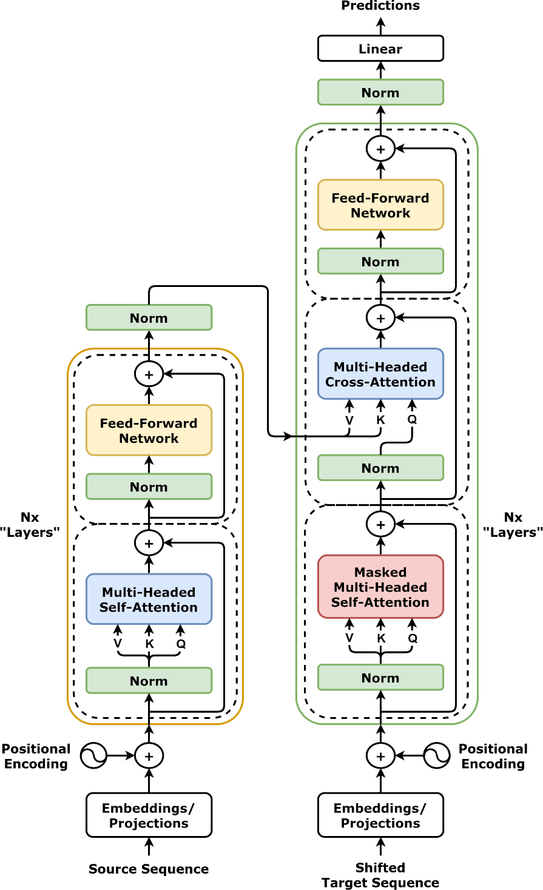
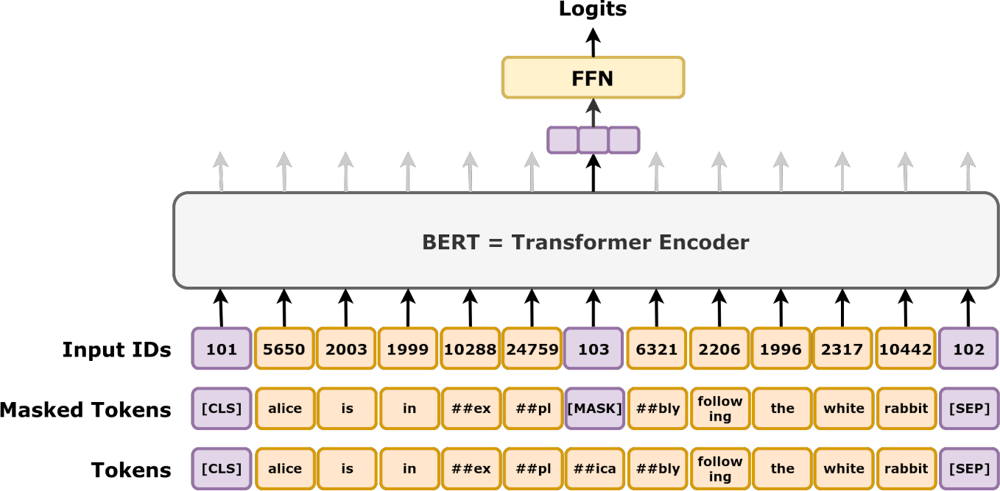
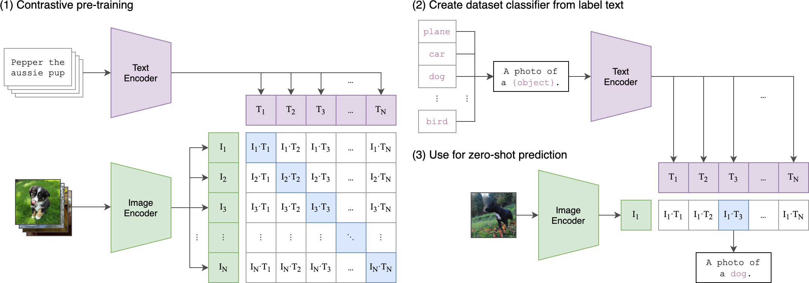
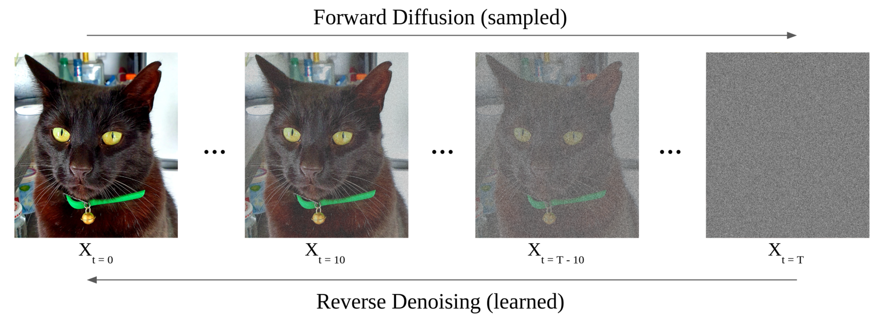
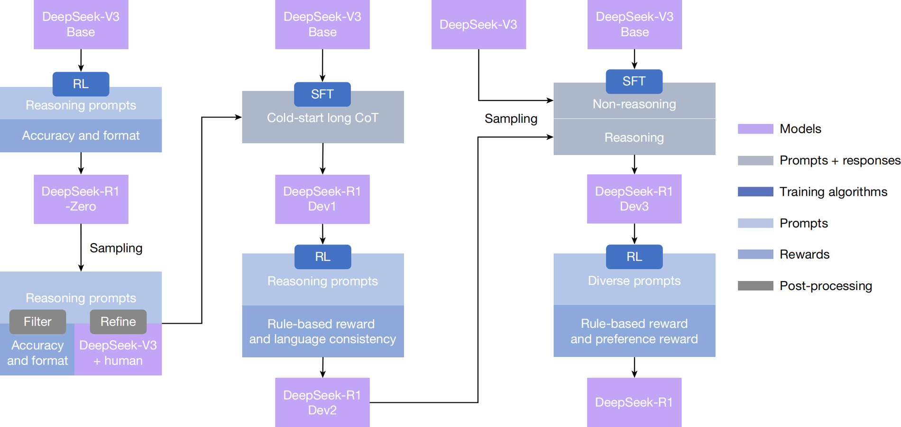
01 Attention removes the loop; 02 BERT reads both ways and fine-tunes in 1h; 03 GPT-3 175B replaces fine-tuning with prompting. The fork: understand (encoder) vs generate (decoder) — generation wins products, inherits hallucination + cost.
Top cards = problem + mechanism, why it works + the equation in plain words, plus a visual and trivia. Bottom = STEP BY STEP, a guided path (13 steps) from first-principles vocabulary to the core concept, worked example, evidence, honest limits, and what the paper unlocked. Follow the year badges: story order, never lost in time.
10 Chinchilla: 70B/1.4T beats 280B (20 tok/param). 04 RAG: hot-swappable Wikipedia index, NQ 44.5 vs 34.5. 05 DDPM: 1000-step denoise beats GANs FID 3.17. 06 CLIP: 400M pairs → zero-shot 76.2%. 07 Latent: 48× compress → 10GB Stable Diffusion.
08 InstructGPT: 13k demos + 33k ranks + PPO → 1.3B > 175B, ChatGPT parent. 09 CoT: 8 worked examples → GSM8K 17.9→56.9%, only >100B. 14 DPO: same optimum in 10 lines, TL;DR 61 vs 57%.
11 LoRA: 4.7M vs 175B, 350GB→35MB, zero latency. 12 FlashAttention: exact, 7.6×, 17GB→0.8GB, 16k first. 13 LLaMA 2: open 2T + RLHF, 36% win vs ChatGPT. 15 R1: pure rule-RL → AIME 79.8 = o1, distill 32B 72.6.
Cost: $5M → 4× cheaper → 10GB → 35MB → 20× cheaper. Memory: memorize vs retrieve. Access: open → closed API → open weights → MIT. Controls: →/Space next · ← back · O overview · F fullscreen · 1–4 acts.
Machine translation (MT) systems built from long short-term memory (LSTM) encoder–decoders had to process one word at a time, using the recurrence ht=f(ht−1,xt). As a result, word ten had to wait for word nine, words in one example could not be processed in parallel, and long sentences were squeezed through a single summary that could lose early details. Bahdanau attention let a decoder look back at source words, but it was still attached to a recurrent neural network (RNN). Convolutional neural network (CNN) alternatives such as ByteNet and ConvS2S allowed parallel processing, yet required O(log n)–O(n) layers for distant words to interact; long-range relationships such as verb agreement remained difficult, and training still took weeks.
Self-attention gives any pair of words a direct connection, so their maximum interaction path is O(1) rather than O(n); a reference can remain available instead of being blurred through a long recurrent chain. The model expresses these comparisons as matrix multiplications, allowing graphics processing units (GPUs) to compute many of the n² token-to-token scores in parallel. Its eight heads can learn different relationships, such as pronoun reference, tense, or word alignment, while the FFN processes each position’s representation. The design therefore trades sequential memory access for parallel computation.
ELMo combined a left-to-right and a right-to-left long short-term memory (LSTM) network, but each direction was trained separately, so its representations were never deeply bidirectional. The original Generative Pre-trained Transformer (GPT) used a Transformer with a causal mask: it could see earlier words but not later ones, so a representation of bank could not use a following word such as river to resolve its meaning. Question answering (QA) over text spans and natural language inference (NLI) both benefit from using context on both sides. Task-specific networks still lagged, and although pretraining helped, each task generally required a different architecture.
To fill in a hidden word, BERT must combine information from the words before and after it throughout every layer, while the corruption recipe avoids making the model depend only on a special MASK token at test time. The next-sentence objective adds a signal about whether two passages fit together, which ordinary next-word prediction does not directly provide. Together, filling gaps and checking sentence order teach reusable contextual representations that can be adapted to many tasks.
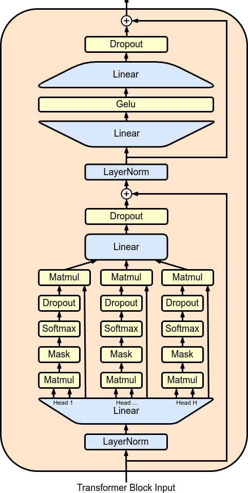
The usual pretrain-then-fine-tune recipe required roughly 1,000–100,000 labelled examples for each task, making the long tail of tasks too expensive and encouraging brittle shortcuts that failed on out-of-distribution (OOD) inputs. People can often switch tasks after reading an instruction and one or two examples, without retraining. GPT-2 suggested that a model might learn from examples placed in its prompt, but it scored only 4% on Natural Questions (NQ) and 55 F1 on CoQA, far below fine-tuned systems. The open question was whether scaling the model enough could make prompting competitive.
Predicting the next word across a huge and varied text collection teaches GPT-3 to act as a powerful pattern completer. Examples in the prompt can show the model which pattern to continue, so it can infer the task from context without gradient updates. The authors’ explanation is that spare model capacity supports this latent task inference, and that the useful amount of information supplied by a few examples increases sharply with model scale.
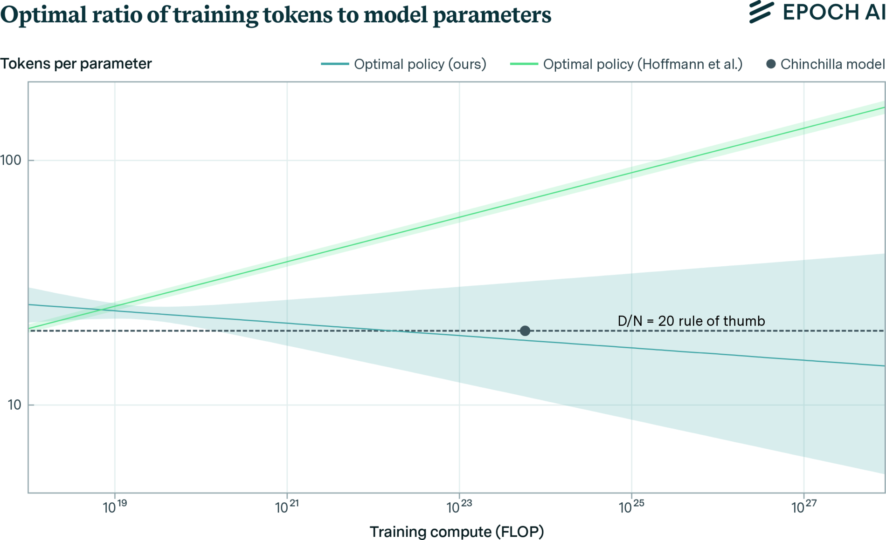
Kaplan and colleagues’ 2020 scaling recommendation spent each tenfold increase in compute on about 5.5 times as many parameters but only 1.8 times as much training data. That recipe produced models such as GPT-3 (175 billion parameters trained on 300 billion tokens), Gopher (280 billion on 300 billion), and MT-NLG (530 billion on 270 billion). These models had enormous capacity but too few examples to use it fully, wasting both training compute and the much larger lifetime cost of serving an oversized model. The field kept enlarging the model instead of giving it enough data.
Model capacity and training data need to grow together: roughly doubling the parameters calls for doubling the training tokens. Earlier experiments used schedules that stopped large models before they had fully benefited from their compute, which biased the recommendation toward bigger networks. With compute-matched schedules, the experiments show that a well-trained, data-rich smaller model can outperform a starved giant at the same training cost and then remain cheaper every time it is used.
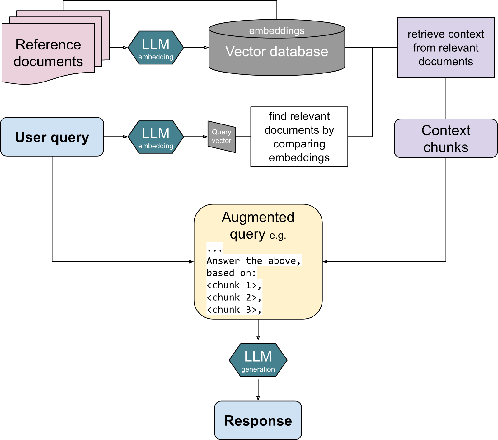
Retrieval-augmented generation (RAG) addresses the limits of closed-book question answering with systems such as T5-11B, which stored facts in its weights and reached 34.5 exact match on Natural Questions (NQ). Those facts could become outdated, the model could not point to sources, and it sometimes generated fluent false answers. Dense Passage Retrieval (DPR) reached 41.5 and could retrieve evidence, but its extractive answers had to copy a matching text span; a changed phrasing or a question needing evidence from multiple documents could defeat it. There was no general sequence-to-sequence method for generating fluent answers grounded in retrieved evidence.
The design gives the generator two complementary kinds of memory: its learned parameters provide fluent language, while retrieved passages supply updateable factual evidence. Marginalizing over several documents lets the answer account for uncertainty in the retriever instead of trusting only its top result. When facts change, the index can be replaced without retraining the language model. Retrieval and generation therefore cooperate: one finds evidence and the other explains it.
Image generation in 2020 involved difficult trade-offs. Generative adversarial networks (GANs) could make sharp pictures, but training was unstable and mode collapse could make them repeat only a few kinds of faces. Autoregressive models had strong likelihoods but generated pixels in sequence, taking O(n) steps; normalizing flows and variational autoencoders (VAEs) often produced blurry images. Diffusion had been proposed by Sohl-Dickstein in 2015, but its samples were not yet competitive, while score-based and energy-based model (EBM) samplers needed manually designed annealing schedules. The goal was stable regression training with image quality comparable to GANs.
Predicting the added noise residual is a well-conditioned task compared with predicting every clean pixel directly. Giving noise levels uniform training weight prevents the model from spending most of its capacity on nearly clean images and imperceptible details. At generation time, the 1,000 small denoising decisions compose into a sharp and varied image distribution. Stable regression avoids the adversarial instability of GAN training while covering more modes.
Conventional image classifiers needed a new labelled dataset, output head, and fine-tuning run for every new concept. Earlier caption-based learning had not solved the problem: Visual N-Grams reached only 11.5% zero-shot accuracy on ImageNet, compared with roughly 50% for a classic classifier and 88% for a supervised model. Hashtag and other weak-label pretraining still produced fixed classifiers, so they could not freely recognize concepts expressed as text or transfer reliably to optical character recognition (OCR), actions, and geography.
Matching 400 million noisy image–caption pairs places open-vocabulary meaning in a shared visual and linguistic space, spanning objects, text in images, actions, and places. A natural-language description can therefore act as a classifier label: encode the description and compare it with the image. Using prompts that resemble the captions seen during training also reduces the mismatch between training and test inputs and improves accuracy.
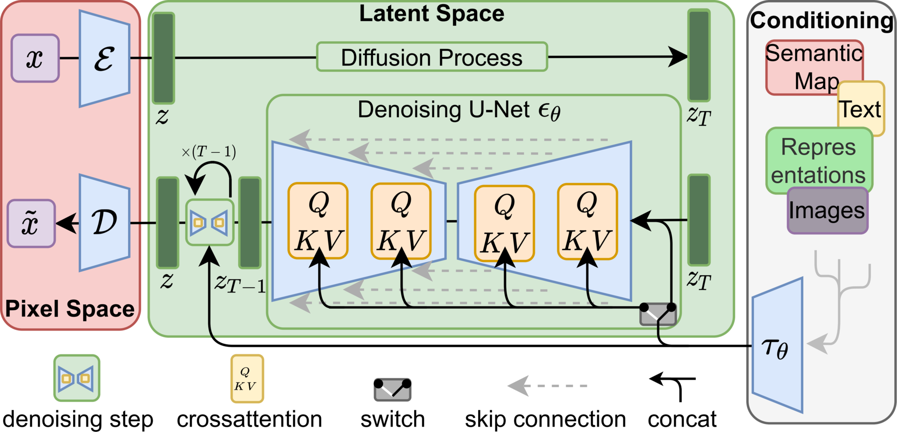
Generative adversarial networks (GANs) made sharp images but trained unstably and sometimes collapsed to a narrow set of outputs. Autoregressive (AR) Transformers needed billions of parameters and generated images token by token. Pixel-space denoising diffusion probabilistic models (DDPMs) processed every H×W×3 pixel at every step, requiring 150–1,000 V100-days to train and about five A100-days to produce 50,000 samples. That cost made the systems difficult to access and energy-intensive, while the original diffusion setup did not provide text control. The challenge was to retain DDPM image quality while achieving the efficiency of the methods in Papers 11 and 12 and the language steering of Paper 06.
Full-resolution pixels contain many small texture details that are expensive to process but do not all matter equally for meaning. The autoencoder learns to preserve perceptually important detail once, while diffusion composes the image’s semantics in a space 16–64 times smaller. Decoding only after denoising amortizes the cost of hundreds of diffusion steps, making image generation much cheaper without giving up the reported quality.
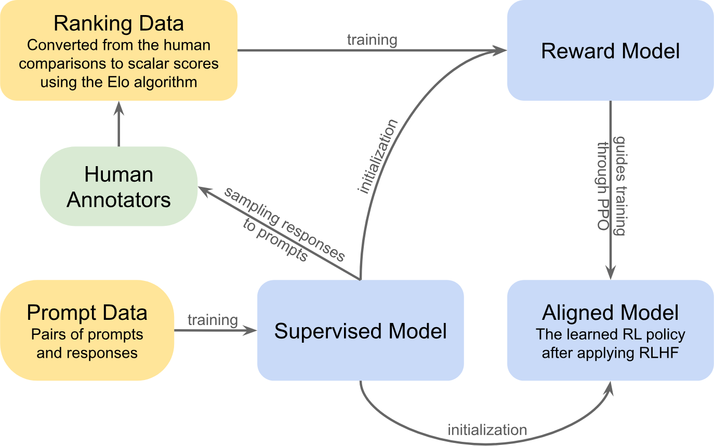
GPT-3 could continue a user’s question by writing more questions, ignore a request such as “answer in two paragraphs,” and hallucinate on 41% of closed-domain questions; it could also become toxic or biased when prompted. Few-shot prompting helped little, while instruction-tuned FLAN and T0 focused on classification and question answering rather than the open-ended brainstorming and generation customers used through the API. The challenge was to teach the model the nuanced goals of being helpful, honest, and harmless without repeating its enormous pretraining run.
Human rankings are distilled into an automatic judge that can score many responses, and reinforcement learning uses those scores to improve the assistant. The KL penalty keeps the updated policy near its supervised starting point, while mixing in pretraining examples helps preserve general language ability and reduce the cost of alignment. The three stages work together: demonstrate a good response, learn which responses people prefer, and practice improving without drifting too far from the original model.
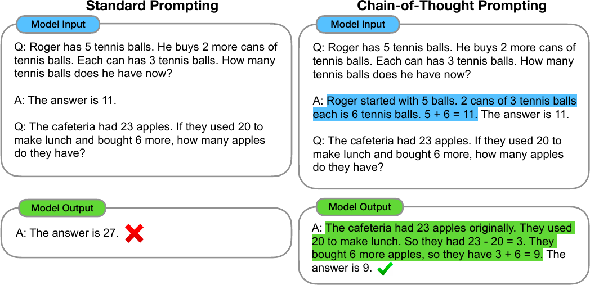
Ordinary few-shot prompts that show a question and its answer could retrieve familiar facts, but performance stalled on multi-step mathematics and commonsense problems. The model often jumped directly to an answer and made an arithmetic or logical mistake along the way. The usual fixes were to fine-tune separately on thousands of written rationales, as in Cobbe’s verifier work, or to build brittle neuro-symbolic solvers. Both approaches were expensive, specialized, and difficult to reuse across tasks at serving time.
A written English scratchpad turns one difficult jump into smaller steps that can be checked, and generating those extra tokens gives the model more computation for the problem. The paper finds this latent reasoning behaviour appears most clearly once a model is large enough; smaller networks often lack the capacity to carry out the same procedure. Because the examples demonstrate the reasoning format, the model can continue that pattern at test time without fine-tuning.
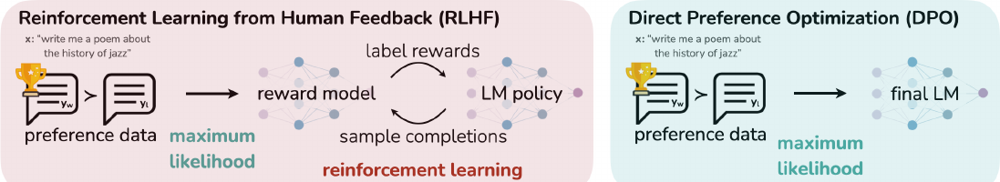
Reinforcement learning from human feedback (RLHF) with proximal policy optimization (PPO) needed four networks: the policy being trained, a frozen reference policy, a reward model, and a value model. It also required online response sampling and careful tuning of the Kullback–Leibler penalty, clipping, advantages, and reward normalization. High-variance updates could exploit the reward judge with gibberish, collapse into one safe-sounding response, or exploit a frozen reward model on inputs unlike its training data. The complexity and compounded errors across stages made this alignment approach difficult for smaller research teams to run.
Direct Preference Optimization (DPO) derives a simpler alignment loss directly from preference pairs. The policy’s log-probability ratio against its reference acts as an implicit reward, so there is no separate reward network to train. The comparison loss raises the probability of the preferred answer and lowers the rejected answer, with the update size depending on how badly the current model ranks the pair: an already-correct comparison receives a small change, while a reversed preference receives a larger one. This avoids the repetitive output collapse associated with simpler unlikelihood-style training.
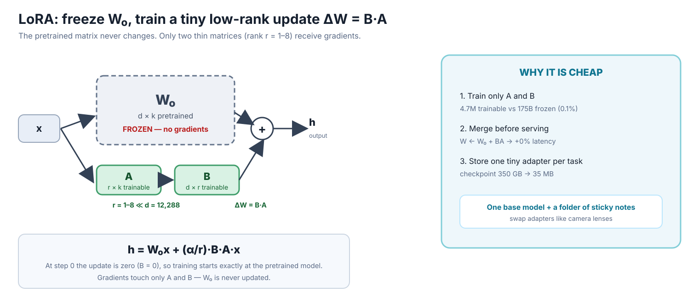
Fully fine-tuning GPT-3’s 175 billion parameters created a checkpoint of about 350 gigabytes for each task, while the Adam optimizer required about 1.2 terabytes of graphics-card memory (VRAM). Keeping versions for 100 tasks would therefore take roughly 35 terabytes before accounting for optimizer-state swapping. Existing adapters added 20–30% latency at batch size one, and prefix-tuning both consumed context-window space and trained unstably. The goal was to switch tasks without multiplying storage, slowing inference, or maintaining separate serving systems.
Task adaptation appears to have a low intrinsic dimension: useful changes can be expressed through a small number of directions rather than rewriting every model weight. LoRA amplifies quieter pretrained directions, measuring energy of 6.91 compared with 0.32 for the projection of dominant directions, or roughly 21 times as much. A small learned subspace is therefore sufficient for many tasks, and merging its update into the original matrix removes any adapter overhead during inference.
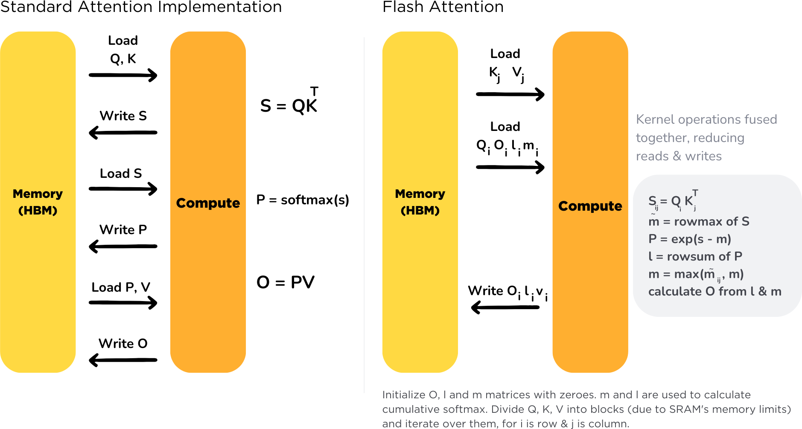
Standard attention materializes the score matrix S=QKT and the probability matrix P=softmax(S), both with N×N values; even a sequence length of N=1,024 creates more than one million values per head. Repeatedly writing and reading these matrices from high-bandwidth memory (HBM) for softmax, dropout, and backpropagation dominates runtime. Sparse and low-rank approximations reduce floating-point operations (FLOPs), but do not necessarily improve wall-clock time and can reduce quality. The challenge was to preserve exact attention while supporting long sequences without being overwhelmed by input/output (I/O) data movement.
On modern processors, fewer arithmetic operations do not always mean faster execution. FlashAttention deliberately recomputes some values, increasing work from 66.6 to 75.2 GFLOPs, to reduce memory traffic from 40.3 to 4.4 gigabytes and runtime from 41.7 to 7.3 milliseconds. Its tiling minimizes slow transfers while retaining the exact attention result, and its saved state grows linearly with sequence length rather than storing the full attention matrix.
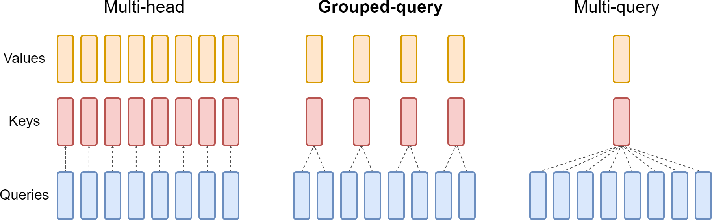
Closed assistants such as ChatGPT, Bard, and Claude were useful and safety-tuned through costly supervised fine-tuning (SFT) and reinforcement learning from human feedback (RLHF), but their models and training recipes were opaque and difficult to reproduce. Open models such as BLOOM, Falcon, and LLaMA 1 provided strong base weights, comparable to GPT-3 or Chinchilla, but were not trained to behave like assistants and could be unsafe in chat. The crucial alignment process remained hidden behind application programming interfaces (APIs), leaving researchers unable to study or afford the final step from a capable base model to a usable assistant.
A strong pretrained base provides broad capability, while a small set of elite demonstrations teaches the assistant’s response style. Fresh on-policy comparisons and separate helpfulness and safety rewards let the system explore with rejection sampling and improve with PPO without forcing the two goals into one signal. Grouped-query attention keeps long conversations practical to serve, and publishing the training recipe makes the process reproducible for other teams.
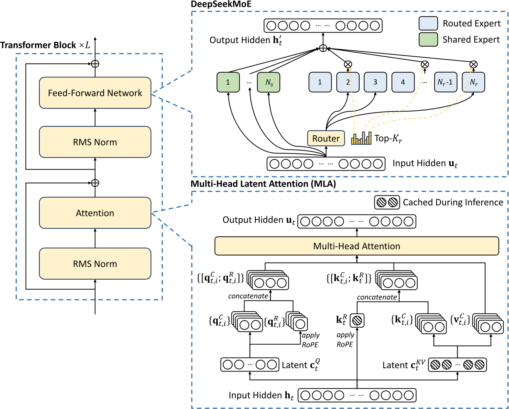
Supervised fine-tuning (SFT) can copy human-written reasoning traces, but collecting those chains is expensive and imitation does not teach the model to check its own work. Proximal policy optimization (PPO) with a learned reward model can be exploited and needs a value network as large as the policy, which is difficult when later steps revise earlier reasoning. Chain-of-Thought prompting also relies on very large models—over 100 billion parameters—and many generated tokens. OpenAI’s o1 was strong but closed and expensive. The goal was verifiable reasoning that could be learned without human-written chains and later transferred to smaller models.
The reward evaluates the final destination rather than prescribing every intermediate step, so exploration can discover that checking work and backtracking improve the chance of a correct answer; the model’s reasoning grows to about 20,000 tokens. GRPO compares sibling answers to the same question, which fits a reasoning process that may revise earlier steps better than a value network that must score partial thoughts. In this setup, the per-token KL penalty used in PPO could also discourage long reasoning simply because it contains more tokens.
R1-Zero showed that a final-answer reward can produce strong reasoning, but its raw answers were often hard to read and it was not yet a polished, helpful assistant. DeepSeek’s next challenge was to preserve the new reasoning ability while improving clarity, instruction following, language consistency, and safety. The team also wanted to transfer that capability into smaller models that people could run more affordably.
The authors use 800,000 polished R1 traces to train six smaller Qwen and Llama models with supervised fine-tuning for two or three epochs and a 32,000-token context window; this stage uses no reinforcement learning. A distilled 32-billion-parameter model scores 72.6 on AIME, compared with 47.0 for the same-size model trained with direct reinforcement learning. The teacher’s worked examples give the smaller model useful reasoning paths without requiring it to discover them through costly trial and error.
Reinforcement learning asks a smaller model to explore many possible reasoning paths, but a capable path is difficult to discover in the limited search space of a 32-billion-parameter student. R1’s verified traces concentrate training on solutions that already work, allowing supervised fine-tuning to teach useful reasoning directly instead of spending rollouts on unsuccessful exploration. At inference, the paper recommends zero-shot prompts because extra examples can reduce reasoning accuracy; the model produces a long reasoning section and then a concise summary.
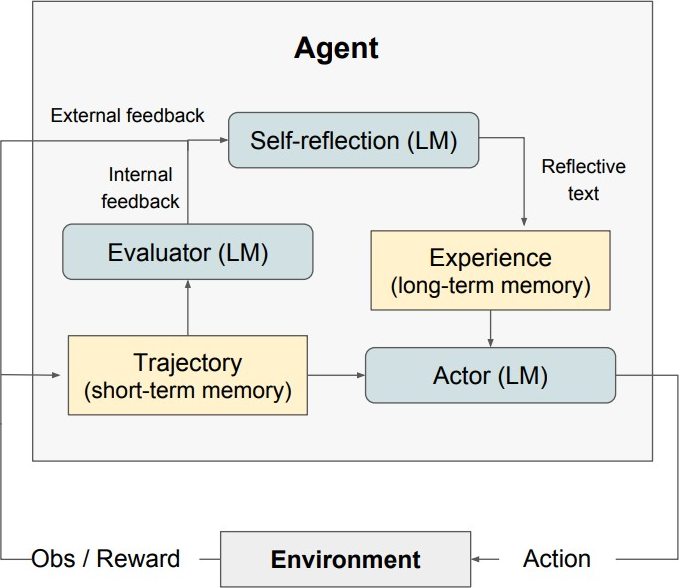
Attention killed recurrence; Flash killed IO walks (41→7ms). Count 20 tok/param — Chinchilla 70B/1.4T beats 280B at same FLOPs, 4× cheaper forever.
Weights for skills/fluency, index for facts: RAG NQ 44.5 vs 34.5, 11.8% right with nothing retrieved, hot-swap 2016↔2018 proves freshness.
Same base wild/helpful: SFT 13k + RM 33k + PPO-KL (08) or DPO 10 lines β0.1 (14): 1.3B > 175B, TL;DR 61 vs 57%. Budget alignment, not just pretraining.
CoT 8 examples 17.9→56.9% (only >100B) → R1-Zero pure rule-RL 15.6→77.9% + “wait” → 32B distill 72.6 vs 47 direct.
ε+Lsimple 13→3 FID · 48× latent → 10GB · 35MB LoRA +0% latency · MIT R1 20× cheaper. Runnable beats huge.
Retrieve 04 · see 06/07 · talk 03/13 · behave 08/14 · reason 09/15 — on 01 backbone, fed per 10, thrifty per 11/12. Start 01–03, dip 05–07, study 08–09→14–15, keep 10–12 at hand.
Notes: 00 story + 01–15 in this folder · Beatles + rodents + “wait…” — you now get all three jokes · O overview · F fullscreen · 1–4 acts


.svg){kind=link}